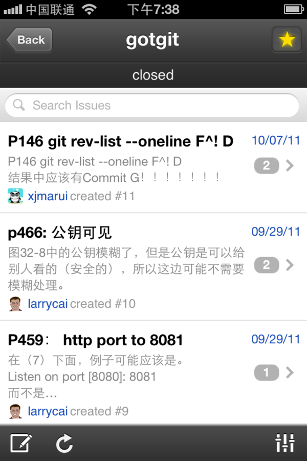

6.3.3. iOS应用¶
GitHub还为iOS平台开发了应用，这样就可以在 iPhone、iPad 等苹果设备上实时跟踪GitHub上的项目了。在苹果AppStore上搜索GitHub公司的应用，可以找到GitHub Issues和GitHub Jobs等应用，如图6-14所示。

图6-14：iPhone上的issues应用
在iPhone中安装GitHub Issues应用，就可以随时查看所关注的GitHub项目的问题报告和Pull Request等，如图6-15所示。

图6-15：iPhone上的GitHub Issues应用
而GitHub Jobs应用则和即将要介绍的GitHub招聘网站有关，用于浏览招聘信息。